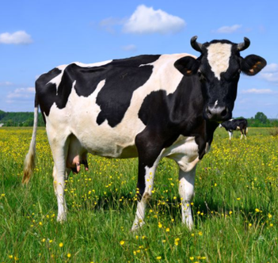

Smithard's Dog Co. Nutrition
This is what is behind Smithard's Dog Co. Products.

Here at Smithard's Dog Co, we use all natural products, especially in our factories. All our products are homemade on stainless steel, supervised by our managers, and checked for perfection. Our team of Smithard's Researchers looked at hundreds of studies and surveys before composing our recipes and other products. At Smithard's, we use beef, goat, chicken, salmon, tuna, corn, carrots, celery, sweet-potatoes, and whole-wheat. In addition, on each one of Smithard's Dog Co. products, consumers can find the nutrition facts, benefits, and detriments of that product, as well as a note from the CEO, the Manager, and the farmer.